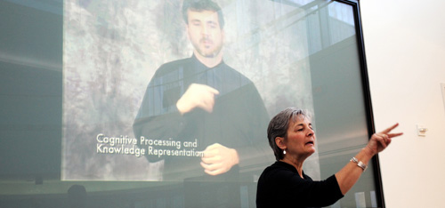
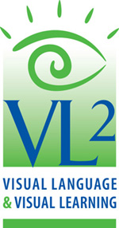

Gallaudet University - Science of Learning Center on Visual Language and Visual Learning (VL2)

URL: http://vl2.gallaudet.edu
Name of PI: Dr. Thomas E. Allen
Current Projects:
Print-sign co-activation in ASL-English bilinguals (Collaborators: Judith Kroll, Corinne Occhino-Kehoe, Pilar Piñar, Erin Wilkinson)
Sentence processing in deaf L2 English learners: Insights from Eye-tracking (Collaborators: David Corina, P. Giuli Dussias, Pilar Piñar, Matt Traxler)
